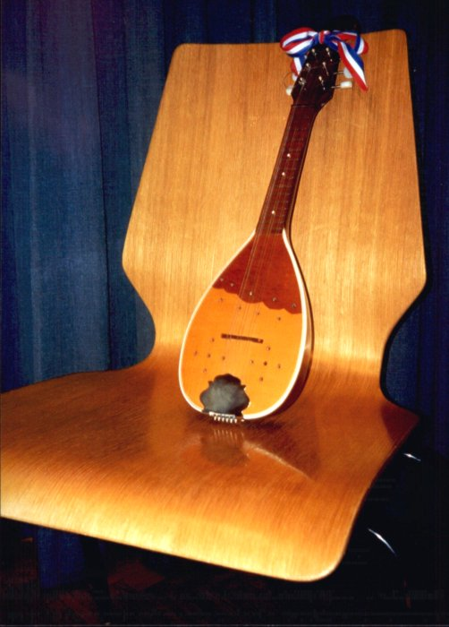
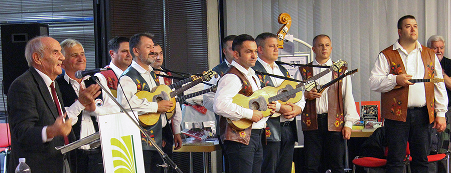
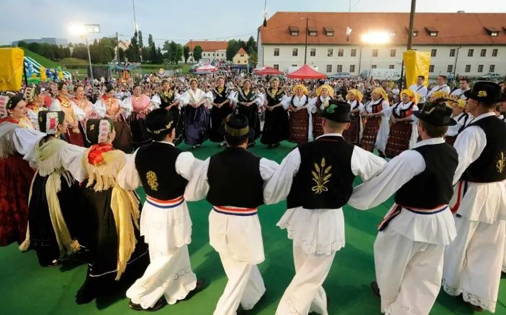
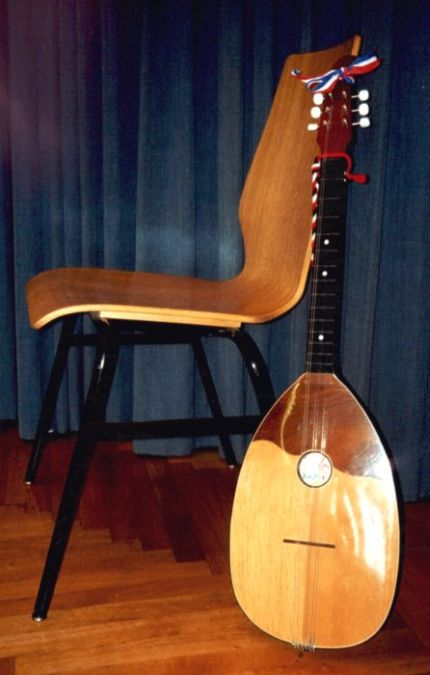
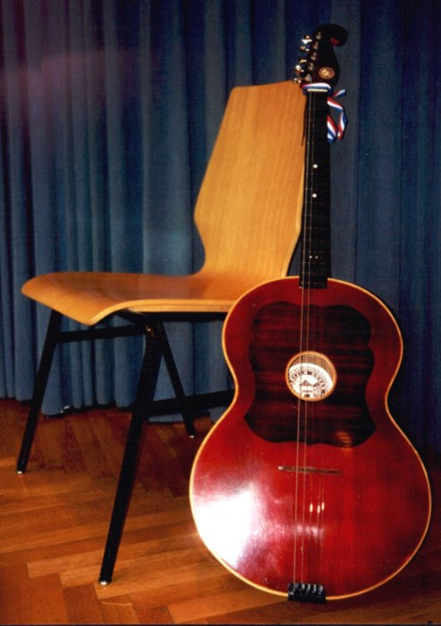

Tradicionalna pjesma u Slavoniji i istočnoj Hrvatskoj
Slavonija i istočna Hrvatska imaju bogatu tradiciju vokalne i tamburaške glazbe. Ovaj regionalni pregled ne predstavlja sve pjesme kao posebnost samoga Slavonskog Broda.
Slavonske pjesme govore o ljubavi, radu, veselju i druženju, a izvode se uz tradicionalne instrumente poput tambure.
Ova glazba predstavlja važan dio identiteta Slavonije i nezaobilazan je dio kulturne baštine.
Bećarac
Bećarac je tradicijsko pjevanje i sviranje iz istočne Hrvatske. Upisan je 2011. godine na UNESCO-ov Reprezentativni popis nematerijalne kulturne baštine čovječanstva.
Kolo – slavonsko kolo
Kolo je tradicionalni slavonski ples u kojem ljudi plešu u krugu, držeći se za ruke.

Tambura i tradicionalna pjesma
Tamburaški instrumenti i pjesme dio su šire glazbene tradicije Slavonije. Prikazani instrumenti i zvučni zapisi ovdje služe kao primjeri te regionalne baštine.

Brač
